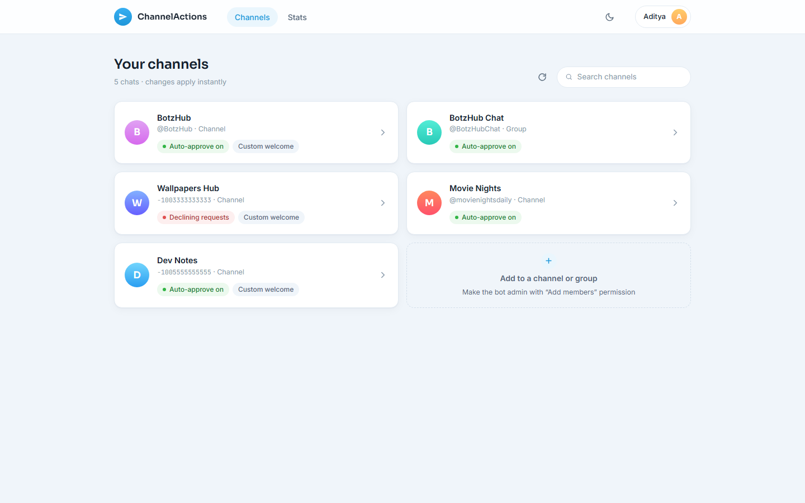

Nobody waits to be let in.
ChannelActions answers join requests to your Telegram channel the second they arrive. It approves or declines them on your terms, then sends each new member a welcome with their own name in it.
Free, open source, and it never asks for your account.
channel · 48,209 subscribers
Join request approved 0.4s
Two answers
Open the door, or keep it shut.
Telegram's admin-approval invite links put a queue in front of your channel. ChannelActions empties that queue for you, whichever way you want it emptied.
Approve everyone, instantly
The bot accepts every request the moment Telegram reports it, day or night. Nobody has to open the app and tap a name.
- Works the same on channels and groups
- Keeps the approval step on your invite link without the wait
- Pairs with a welcome message, so new members hear something back
Or decline them all
Closed the channel, or just want the old link to stop working? Flip one switch and the bot turns every request away, with your own note attached if you write one.
The welcome
Write it once. Everyone gets their own.
Two tokens are all it takes. The bot fills them in for each member and sends the message as a direct chat, so nobody's name ends up in your channel feed.
bot
Dashboard
Every chat you run, on one screen.
Open it in a browser, or straight inside Telegram as a Mini App. Same settings and the same account either way, and you never have to invent a password.

Admin-checked, every time
Before a setting saves, the bot re-asks Telegram whether you still administer that chat. If you lose admin, you lose access at the same moment.
Numbers that mean something
Approvals and declines per day and per chat, over the last 30 days. Enough to tell a good invite link from a bad one.
Follows your theme
Light and dark, matched to Telegram's own colour scheme when you open it inside the app.
Languages
It already speaks to your members.
Twenty-five translations, all contributed by people who use the bot. If yours is missing, it takes one file and a pull request.
- Arabic ar
- Assamese as
- Bengali bn
- Chinese cn
- Danish da
- English en
- French fr
- German de
- Gujarati gu
- Hindi hi
- Indonesian id
- Italian it
- Japanese ja
- Kannada kn
- Korean kr
- Malayalam ml
- Marathi mr
- Nepali ne
- Odia or
- Punjabi pn
- Russian ru
- Spanish es
- Tamil ta
- Telugu te
- Turkish tr
Setup
Three steps, about a minute.
Add the bot as an admin
In your channel or group, add @ChannelActionsBot and give it the "Add members" permission. That one permission is all it uses.
Point it at the chat
Forward any message from that chat to the bot. You can also just open the dashboard, where chats you administer already show up.
Pick an answer
Approve or decline, and write a welcome if you want one. The change applies to the very next request, and there is nothing to redeploy.